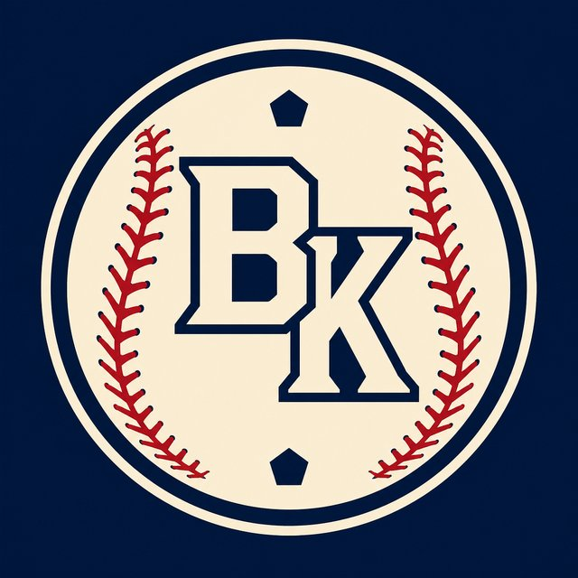

BASE KEEP
The Keep · The Diamond · The Farm
BK News · Coach report
Aggregate
Fatse replaces Kevin Long, under whom the Phillies' hitting numbers had steadily declined. Fatse spent four-plus seasons leading Boston's offense before joining the Rays as a hitting consultant. Aggregated from Yahoo Sports, SB Nation, NBC Sports Philadelphia.
No BaseKeep player page matched this cluster yet.
Tape
Fatse replaces Kevin Long, under whom the Phillies' hitting numbers had steadily declined.
New hitting coach.
Fatse spent four-plus seasons leading Boston's offense before joining the Rays as a hitting consultant.